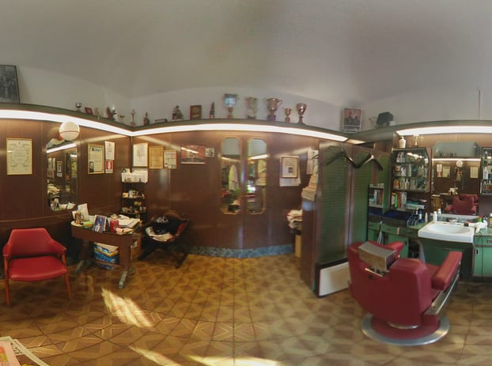
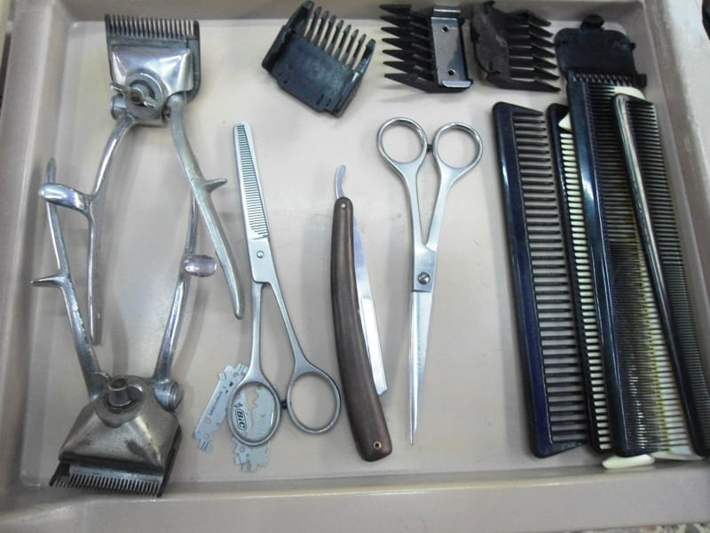

Via San Fermo · Brera · dal 1953
una bottega senza tempo
Dal 1953, una barberia storica nel cuore di Brera. Qui il taglio si fa solo a forbice — niente macchinetta — tra i mobili antichi e le vetrinette di acque profumate di sempre. Si entra per un taglio, si esce con una chiacchierata.

La bottega
La bottega apre nel 1953 e viene sistemata alla fine degli anni Sessanta: da allora è rimasta com'era. I mobili antichi, le vetrinette con le boccette di acque profumate, le poltrone d'epoca, i trofei e le fotografie alle pareti.
Oggi la porta avanti Matteo, un cliente alla volta. C'è chi ci viene da dieci anni, e chi «apposta dagli Stati Uniti» per tagliarsi i capelli in una vera bottega storica di Milano.
Il nostro modo
È la nostra firma, e la scriviamo con le lame. Il taglio a forbice segue il capello uno per uno: ci vuole più tempo, più mano, più occhio — ma il risultato cresce bene e si porta per settimane. È la differenza tra un taglio e un taglio fatto a regola d'arte.
Alla bottega si parla di…
Una bottega storica è anche questo: un posto dove ci si siede, si aspetta il proprio turno e si chiacchiera. Di solito si finisce a parlare di…
«Bottega storica dove si parla di cinema, vita sociale e sport.» — e la fede neroazzurra si perdona.
I ferri del mestiere

Le voci
Tagliarmi i capelli con Matteo è stato meraviglioso. Si può avere un solo parrucchiere per paese, e senza dubbio lui è diventato il mio parrucchiere italiano.
Leandro Di Stefano · ★★★★★
Bottega storica dove si parla di cinema, vita sociale e sport. Professionalità garantita sempre: solo forbici, no macchinetta!
Giangiacomo Rizzotto · ★★★★★
Parrucchiere di fiducia ormai da dieci anni, sempre professionale e tagli perfetti. È un piacere andare da Matteo.
Davide Politi · ★★★★★
Professionalità e simpatia, il tutto immersi in un'atmosfera senza tempo.
Recensione Google · ★★★★★
Vengo apposta dagli Stati Uniti per tagliarmi i capelli in questa bottega storica.
Recensione Google · ★★★★★
Dove siamo
La mappa è di Google: aprendola, Google riceve il tuo indirizzo IP e può usare i suoi cookie.
FAQ
In Via San Fermo della Battaglia 1, a due passi da Brera e da Piazza San Marco, a Milano. È una bottega storica, aperta dal 1953.
Taglio da uomo eseguito solo a forbice, niente macchinetta, più barba e rasatura tradizionale. Un lavoro artigianale, su misura.
Meglio chiamare: la bottega è piccola e Matteo lavora un cliente alla volta. Un colpo di telefono e trovi il tuo posto.
Da martedì a venerdì 09:00–12:30 e 14:30–19:30, sabato 09:00–12:30 e 14:30–19:00. Domenica e lunedì chiuso.